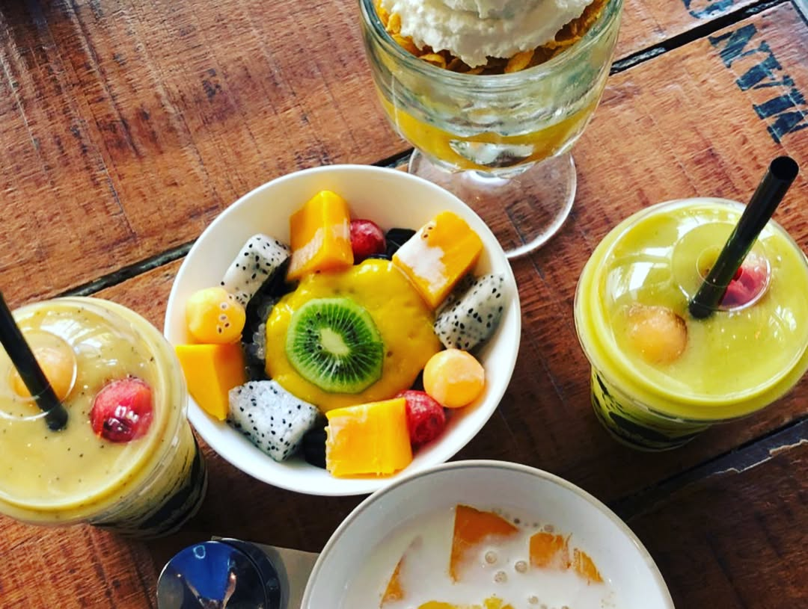

Sharing with you our sweet Thai mango memory and some update from our cooking-swim-bike-running family (guess who is cooking and who is conquering crazy distances😉) We will start sharing more bilingual video content on English and Russian (which is our native) languages to address multiple requests from Russian speaking triathlon friends on Instagram from all over the world 🏊🏼♂️🚴🏼♀️🏃🏾♂️so don’t freak out when you hear unusual DA, NET, BABUSHKA and other abracadabra 😂 subtitles will be provided 🤗 and we hope you will keep enjoying our posts! 🤙🏼 . . . . . . Спешим поделиться нашим сладким тайским воспоминанием со вкусом манго и новостями от нашей готовящей-триатлонной семьи (угадайте с первого раза, кто здесь готовит, а кто покоряет сумасшедшие дистанции 😉)! Мы будем чаще выкладывать билингвальный видео контент на русском и английском языках по просьбам наших дорогих русскоговорящих Инстаграм друзей триатлетов из разных частей света. Теперь английская абракадабра в нашем исполнении станет понятней 😂 (видео будут либо на русском языке, либо на английском с субтитрами🤗) и мы надеемся, что наши посты будут продолжать приносить вам пользу и удовольствие 🤙🏼 —- #triathlontraining #ironmantraining #swimbikerun #marathontraining #ironmantri #trailrunning #foodblogger #instafood #foodography #orbea #cervelo #specializedbikes #giantbikea #canyonbikes #runnersofinstagram #runnersworld #mangos
2018-04-23 23:04:04
Back to main page